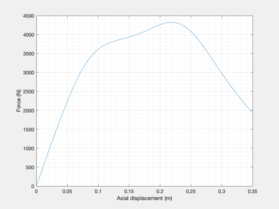
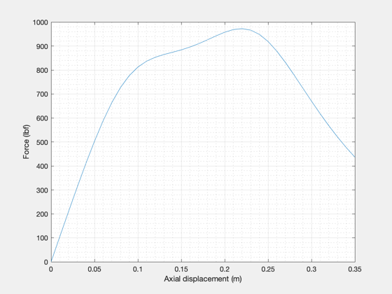

Forces between PCC and LTS for various axial distances
See also: CoAxRectangle, CoAxBField
Contents
%-------------------------------------------------------------------------- % Copyright 2018 Princeton Satellite Systems, Inc. All rights reserved. %-------------------------------------------------------------------------- oneWinding = false; if oneWinding dzs = -0.35:0.02:0.35; else dzs = 0:0.01:0.35; end forces = zeros(size(dzs)); for ind = 1:numel(dzs)
LTS facts
90A 0.5 T LTS magnet
rLTSInner = 0.36/2; rLTSTurns = 16; zLTSTurns = 64; wireLTSR = 5e-4/2; dzLTS = 0.15; ILTS = 90;
Pulsed copper insert
AWG 4, 5.189 mm diameter, 500 ft spool, $480
wireConductorCIR = 5.189e-3/2; wireWrappingCIR = wireConductorCIR + 1.5e-3; % with 1.5mm of insulation rho = 1.7e-8; % Ohm-m densityCopper = 8.9e3; % kg/m^3 specificHeat = 385; % J/kg/K rCIInner = 0.094; % 7.4 inch OD of spool rCITurns = 4; zCITurns = 39; dz = dzs(ind); % Insert derived quantities rCIMin = rCIInner; rCIMax = rCIInner + 2 * rCITurns * wireWrappingCIR; CILen1ZWinding = pi*(rCIMax^2 - rCIInner^2)/(2*wireWrappingCIR); CILenTot = CILen1ZWinding * zCITurns; CIMass = pi * wireConductorCIR^2 * CILenTot * densityCopper; R2 = CILenTot / (pi*wireConductorCIR^2) * rho; % Inductances [rCI,zCI] = CoAxRectangle(rCITurns,zCITurns,rCIInner,dz,wireWrappingCIR); % Two of these packs [rLTS1,zLTS1] = CoAxRectangle(rLTSTurns,zLTSTurns,rLTSInner,-dzLTS/2,wireLTSR); [rLTS2,zLTS2] = CoAxRectangle(rLTSTurns,zLTSTurns,rLTSInner,dzLTS/2,wireLTSR); if oneWinding rLTS = rLTS1; zLTS = zLTS1; else rLTS = [rLTS1;rLTS2]; zLTS = [zLTS1;zLTS2]; end % Currents % I2: current through the copper coil, I3: current induced in the LTS. I2 = 500; % A I3 = 0; % A
Calculate force
F = B*I*L
Br = CoAxBField(rCI,zCI,rLTS,zLTS,ILTS); % B from LTS at positions of CI I = I2*ones(size(rCI)); % Current of CI l = 2*pi*rCI; % length of wire in CI forces(ind) = sum(sum(Br.*I.*l)); % N end
Plots
Plot the resulting force per displacement in both English and metric units.
figure('name','Force in N'); plot(dzs,forces); grid on;grid minor; xlabel('Axial displacement (m)');ylabel('Force (N)'); figure('name','Force in lbf'); plot(dzs,forces/4.45); grid on;grid minor; xlabel('Axial displacement (m)');ylabel('Force (lbf)'); %-------------------------------------- 